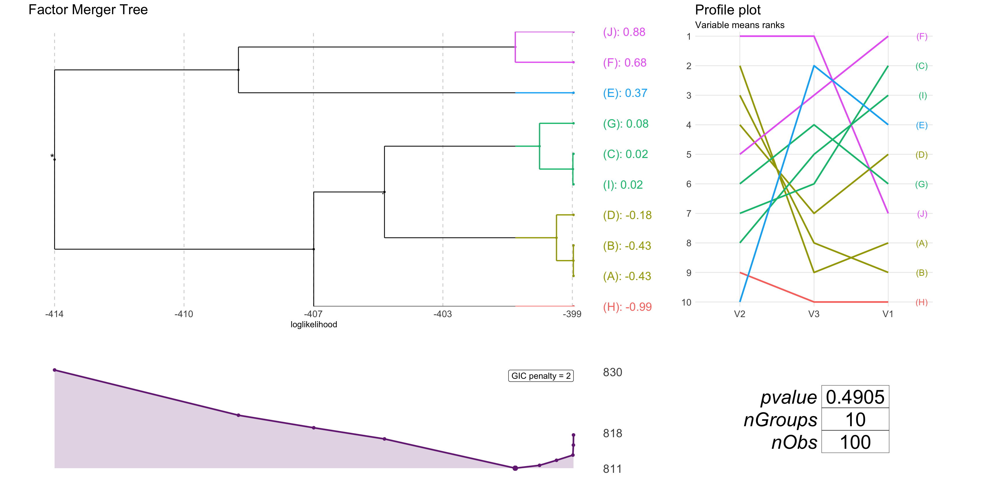
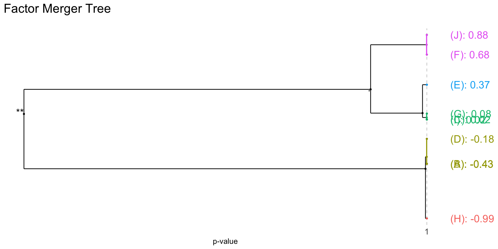
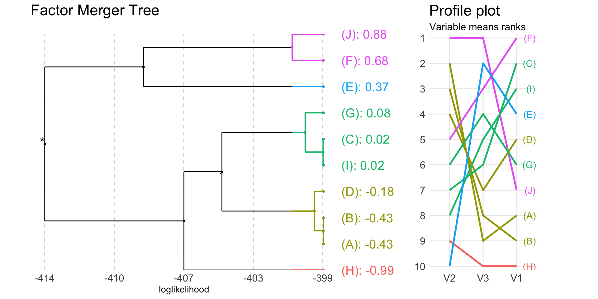
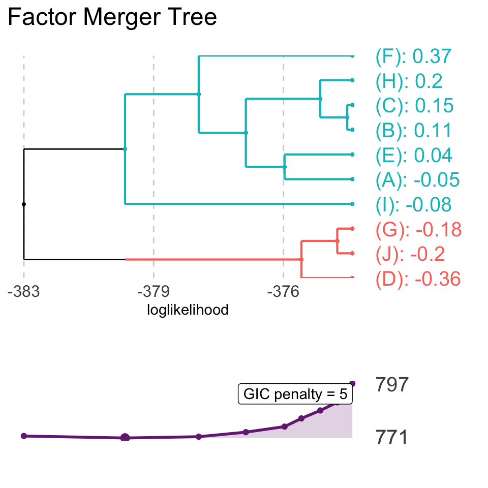
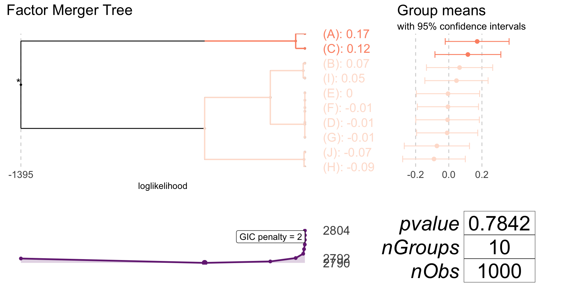
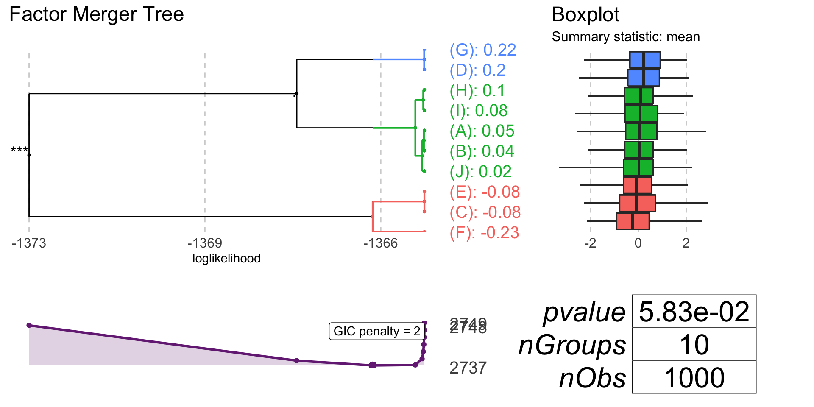
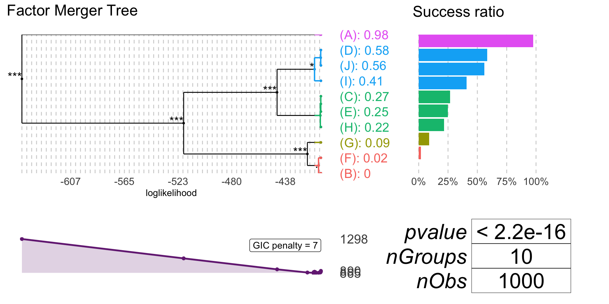
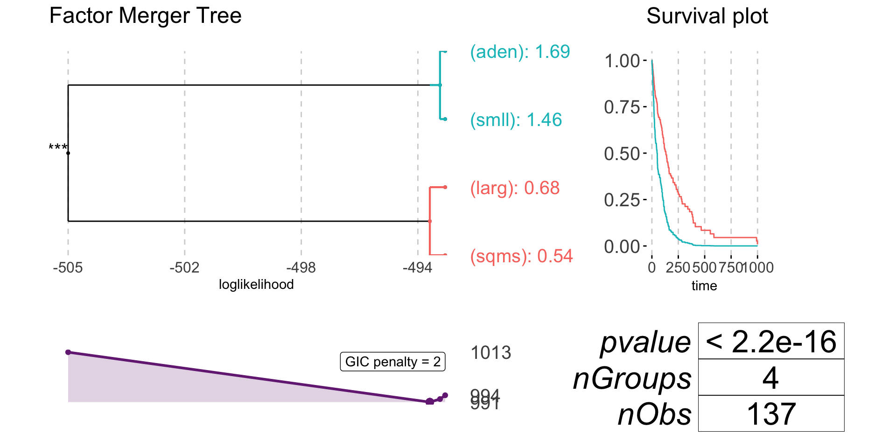
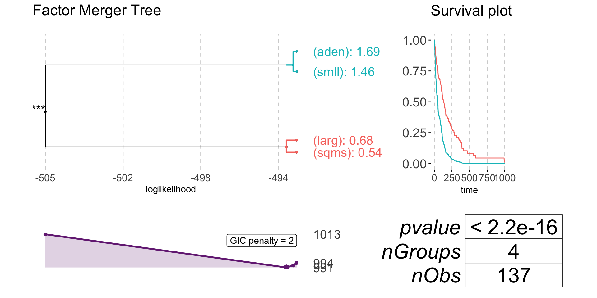

factorMerger: a set of tools to support results from post-hoc testing
Agnieszka Sitko
2017-12-17
Introduction
The aim of factorMerger is to provide a set of tools to support results from post hoc comparisons. Post hoc testing is an analysis performed after running ANOVA to examine differences between group means (of some response numeric variable) for each pair of groups (groups are defined by a factor variable).
This project arose from the need to create a method of post hoc testing which gives the hierarchical interpretation of relations between groups means. Thereby, for a given significance level we may divide groups into non-overlapping clusters.
Algorithm inputs
In the current version the factorMerger package supports parametric models:
- one-dimensional Gaussian (with the argument
family = "gaussian"), - multi dimensional Gaussian (with the argument
family = "gaussian"), - binomial (with the argument
family = "binomial"), - survival (with the argument
family = "survival").
There are four algorithms available: adaptive, fast-adaptive, fixed and fast-fixed (they are set with the method argument of mergeFactors). Fast algorithms enable to unite only those groups whose group statistics (i.e. means in the Gaussian case) are close.
Generating samples
To visualize functionalities of factorMerger we use samples or real data examples with response variable whose distribution follow one of the listed above. The corresponding factor variable is sampled uniformly from a finite set of a size \(k\).
To do so, we may use function generateSample or generateMultivariateSample.
library(factorMerger)
library(knitr)
library(dplyr)
randSample <- generateMultivariateSample(N = 100, k = 10, d = 3)Merging factors
mergeFactors is a function that performs hierarchical post hoc testing. As arguments it takes:
- matrix/data.frame/vector with numeric response,
- factor vector defining groups.
By default (with argument abbreviate = TRUE) factor levels are abbreviated and surrounded with brackets.
Multi-dimensional Gaussian model
Computations
fmAll <- mergeFactors(randSample$response, randSample$factor)mergeFactors outputs with information about the ‘merging history’.
mergingHistory(fmAll, showStats = TRUE) %>%
kable()| groupA | groupB | model | pvalVsFull | pvalVsPrevious | |
|---|---|---|---|---|---|
| 0 | -395.4473 | 1.0000 | 1.0000 | ||
| 1 | (E) | (D) | -395.5593 | 0.9779 | 0.9779 |
| 2 | (E)(D) | (H) | -396.2314 | 0.9654 | 0.7523 |
| 3 | (C) | (G) | -396.9914 | 0.9720 | 0.7112 |
| 4 | (F) | (I) | -397.9955 | 0.9697 | 0.6069 |
| 5 | (B) | (A) | -399.3775 | 0.9523 | 0.4651 |
| 6 | (E)(D)(H) | (C)(G) | -401.4422 | 0.8963 | 0.2769 |
| 7 | (B)(A) | (J) | -404.4294 | 0.7334 | 0.1302 |
| 8 | (F)(I) | (E)(D)(H)(C)(G) | -408.1227 | 0.4943 | 0.0702 |
| 9 | (F)(I)(E)(D)(H)(C)(G) | (B)(A)(J) | -420.3349 | 0.0149 | 0.0000 |
Each row of the above frame describes one step of the merging algorithm. First two columns specify which groups were merged in the iteration, columns model and GIC gather loglikelihood and Generalized Information Criterion for the model after merging. Last two columns are p-values for the Likelihood Ratio Test – against the full model (pvalVsFull) and against the previous one (pvalVsPrevious).
If we choose a fast version of merging one dimensional response is fitted using isoMDS{MASS}. Next, in each step only groups whose means are closed are compared.
fm <- mergeFactors(randSample$response, randSample$factor,
method = "fast-fixed")
mergingHistory(fm, showStats = TRUE) %>%
kable()| groupA | groupB | model | pvalVsFull | pvalVsPrevious | |
|---|---|---|---|---|---|
| 0 | -395.4473 | 1.0000 | 1.0000 | ||
| 1 | (E) | (D) | -395.5593 | 0.9779 | 0.9779 |
| 2 | (E)(D) | (H) | -396.2314 | 0.9654 | 0.7523 |
| 3 | (C) | (G) | -396.9914 | 0.9720 | 0.7112 |
| 4 | (E)(D)(H) | (C)(G) | -399.1290 | 0.8765 | 0.2712 |
| 5 | (F) | (I) | -400.1154 | 0.9013 | 0.6096 |
| 6 | (F)(I) | (E)(D)(H)(C)(G) | -403.9600 | 0.6229 | 0.0661 |
| 7 | (B) | (A) | -405.2276 | 0.6554 | 0.4944 |
| 8 | (B)(A) | (J) | -408.1227 | 0.4943 | 0.1369 |
| 9 | (F)(I)(E)(D)(H)(C)(G) | (B)(A)(J) | -420.3349 | 0.0149 | 0.0000 |
Final clusters
Algorithms implemented in the factorMerger package enable to create unequivocal partition of a factor. Below we present how to extract the partition from the mergeFactor output.
- predict new labels for observations
cutTree(fm)
#> [1] (B) (E)(D)(H) (E)(D)(H) (E)(D)(H) (I) (E)(D)(H) (B)
#> [8] (J) (C)(G) (C)(G) (I) (F) (I) (C)(G)
#> [15] (I) (A) (F) (I) (E)(D)(H) (C)(G) (E)(D)(H)
#> [22] (C)(G) (J) (E)(D)(H) (E)(D)(H) (F) (E)(D)(H) (E)(D)(H)
#> [29] (F) (C)(G) (C)(G) (E)(D)(H) (A) (E)(D)(H) (J)
#> [36] (E)(D)(H) (E)(D)(H) (E)(D)(H) (B) (E)(D)(H) (E)(D)(H) (E)(D)(H)
#> [43] (I) (E)(D)(H) (F) (E)(D)(H) (A) (F) (E)(D)(H)
#> [50] (B) (E)(D)(H) (F) (C)(G) (B) (I) (F)
#> [57] (E)(D)(H) (I) (F) (F) (E)(D)(H) (C)(G) (E)(D)(H)
#> [64] (C)(G) (E)(D)(H) (E)(D)(H) (C)(G) (E)(D)(H) (E)(D)(H) (E)(D)(H)
#> [71] (E)(D)(H) (C)(G) (E)(D)(H) (A) (A) (F) (E)(D)(H)
#> [78] (F) (B) (C)(G) (C)(G) (I) (F) (J)
#> [85] (E)(D)(H) (E)(D)(H) (E)(D)(H) (B) (E)(D)(H) (I) (E)(D)(H)
#> [92] (A) (E)(D)(H) (E)(D)(H) (E)(D)(H) (E)(D)(H) (J) (E)(D)(H)
#> [99] (E)(D)(H) (E)(D)(H)
#> Levels: (F) (I) (E)(D)(H) (C)(G) (B) (A) (J)By default, cutTree returns a factor split for the optimal GIC (with penalty = 2) model. However, we can specify different metrics (stat = c("loglikelihood", "p-value", "GIC") we would like to use in cutting. If loglikelihood or p-value is chosen an exact threshold must be given as a value parameter. Then cutTree returns factor for the smallest model whose statistic is higher than the threshold. If we choose GIC then value is interpreted as GIC penalty.
mH <- mergingHistory(fm, T)
thres <- mH$model[nrow(mH) / 2]
cutTree(fm, stat = "loglikelihood", value = thres)
#> [1] (B) (E)(D)(H)(C)(G) (E)(D)(H)(C)(G) (E)(D)(H)(C)(G)
#> [5] (I) (E)(D)(H)(C)(G) (B) (J)
#> [9] (E)(D)(H)(C)(G) (E)(D)(H)(C)(G) (I) (F)
#> [13] (I) (E)(D)(H)(C)(G) (I) (A)
#> [17] (F) (I) (E)(D)(H)(C)(G) (E)(D)(H)(C)(G)
#> [21] (E)(D)(H)(C)(G) (E)(D)(H)(C)(G) (J) (E)(D)(H)(C)(G)
#> [25] (E)(D)(H)(C)(G) (F) (E)(D)(H)(C)(G) (E)(D)(H)(C)(G)
#> [29] (F) (E)(D)(H)(C)(G) (E)(D)(H)(C)(G) (E)(D)(H)(C)(G)
#> [33] (A) (E)(D)(H)(C)(G) (J) (E)(D)(H)(C)(G)
#> [37] (E)(D)(H)(C)(G) (E)(D)(H)(C)(G) (B) (E)(D)(H)(C)(G)
#> [41] (E)(D)(H)(C)(G) (E)(D)(H)(C)(G) (I) (E)(D)(H)(C)(G)
#> [45] (F) (E)(D)(H)(C)(G) (A) (F)
#> [49] (E)(D)(H)(C)(G) (B) (E)(D)(H)(C)(G) (F)
#> [53] (E)(D)(H)(C)(G) (B) (I) (F)
#> [57] (E)(D)(H)(C)(G) (I) (F) (F)
#> [61] (E)(D)(H)(C)(G) (E)(D)(H)(C)(G) (E)(D)(H)(C)(G) (E)(D)(H)(C)(G)
#> [65] (E)(D)(H)(C)(G) (E)(D)(H)(C)(G) (E)(D)(H)(C)(G) (E)(D)(H)(C)(G)
#> [69] (E)(D)(H)(C)(G) (E)(D)(H)(C)(G) (E)(D)(H)(C)(G) (E)(D)(H)(C)(G)
#> [73] (E)(D)(H)(C)(G) (A) (A) (F)
#> [77] (E)(D)(H)(C)(G) (F) (B) (E)(D)(H)(C)(G)
#> [81] (E)(D)(H)(C)(G) (I) (F) (J)
#> [85] (E)(D)(H)(C)(G) (E)(D)(H)(C)(G) (E)(D)(H)(C)(G) (B)
#> [89] (E)(D)(H)(C)(G) (I) (E)(D)(H)(C)(G) (A)
#> [93] (E)(D)(H)(C)(G) (E)(D)(H)(C)(G) (E)(D)(H)(C)(G) (E)(D)(H)(C)(G)
#> [97] (J) (E)(D)(H)(C)(G) (E)(D)(H)(C)(G) (E)(D)(H)(C)(G)
#> Levels: (F) (I) (E)(D)(H)(C)(G) (B) (A) (J)In this example data partition is created for the last model from the merging path whose loglikelihood is greater than -399.129.
- get final clusters and clusters dictionary
getOptimalPartition(fm)
#> [1] "(F)" "(I)" "(E)(D)(H)" "(C)(G)" "(B)" "(A)"
#> [7] "(J)"Function getOptimalPartition returns a vector with the final cluster names from the factorMerger object.
getOptimalPartitionDf(fm)
#> orig pred
#> 1 (B) (B)
#> 2 (E) (E)(D)(H)
#> 3 (H) (E)(D)(H)
#> 5 (I) (I)
#> 6 (D) (E)(D)(H)
#> 8 (J) (J)
#> 9 (C) (C)(G)
#> 12 (F) (F)
#> 14 (G) (C)(G)
#> 16 (A) (A)Function getOptimalPartitionDf returns a dictionary in a data frame format. Each row gives an original label of a factor level and its new (cluster) label.
Similarly to cutTree, functions getOptimalPartition and getOptimalPartitionDf take arguments stat and threshold.
Visualizations
We may plot results using function plot.
plot(fm, panel = "all", nodesSpacing = "equidistant", colorCluster = TRUE)
plot(fmAll, panel = "tree", statistic = "p-value",
nodesSpacing = "effects", colorCluster = TRUE)
plot(fm, colorCluster = TRUE, panel = "response")
The heatmap on the right shows means of all variables taken into analysis by groups.
plot(fm, colorCluster = TRUE, panel = "response", responsePanel = "profile")
In the above plots colours are connected with the group. The plot on the right shows means rankings for all variables included in the algorithm.
It is also possible to plot GIC together with the merging path plot.
plot(fm, panel = "GIC", penalty = 5)
Model with the lowest GIC is marked.
One-dimensional Gaussian model
oneDimRandSample <- generateSample(1000, 10)oneDimFm <- mergeFactors(oneDimRandSample$response, oneDimRandSample$factor,
method = "fixed")
mergingHistory(oneDimFm, showStats = TRUE) %>%
kable()| groupA | groupB | model | pvalVsFull | pvalVsPrevious | |
|---|---|---|---|---|---|
| 0 | -1419.367 | 1.0000 | 1.0000 | ||
| 1 | (E) | (I) | -1419.367 | 0.9948 | 0.9948 |
| 2 | (A) | (H) | -1419.367 | 0.9994 | 0.9740 |
| 3 | (C) | (E)(I) | -1419.369 | 0.9999 | 0.9503 |
| 4 | (B) | (A)(H) | -1419.371 | 1.0000 | 0.9528 |
| 5 | (D) | (J) | -1419.377 | 1.0000 | 0.9130 |
| 6 | (F) | (D)(J) | -1419.397 | 1.0000 | 0.8416 |
| 7 | (G) | (C)(E)(I) | -1419.487 | 1.0000 | 0.6721 |
| 8 | (F)(D)(J) | (B)(A)(H) | -1420.048 | 0.9949 | 0.2903 |
| 9 | (F)(D)(J)(B)(A)(H) | (G)(C)(E)(I) | -1422.667 | 0.6830 | 0.0223 |
plot(oneDimFm, palette = "Reds")
plot(oneDimFm, responsePanel = "boxplot", colorCluster = TRUE)
Binomial model
If family = "binomial" response must have to values: 0 and 1 (1 is interpreted as success).
binomRandSample <- generateSample(1000, 10, distr = "binomial")
table(binomRandSample$response, binomRandSample$factor) %>%
kable()| H | C | B | G | I | J | F | E | D | A | |
|---|---|---|---|---|---|---|---|---|---|---|
| 0 | 87 | 63 | 64 | 57 | 60 | 56 | 36 | 28 | 11 | 1 |
| 1 | 18 | 28 | 37 | 39 | 57 | 60 | 51 | 66 | 83 | 98 |
binomFm <- mergeFactors(binomRandSample$response,
binomRandSample$factor,
family = "binomial",
method = "fast-adaptive")
mergingHistory(binomFm, showStats = TRUE) %>%
kable()| groupA | groupB | model | pvalVsFull | pvalVsPrevious | |
|---|---|---|---|---|---|
| 0 | -552.6434 | 1.0000 | 1.0000 | ||
| 1 | (I) | (J) | -552.7487 | 0.6463 | 0.6463 |
| 2 | (B) | (G) | -552.9142 | 0.7628 | 0.5651 |
| 3 | (C) | (B)(G) | -553.7482 | 0.5301 | 0.1965 |
| 4 | (I)(J) | (F) | -554.6498 | 0.4043 | 0.1793 |
| 5 | (I)(J)(F) | (E) | -559.4232 | 0.0187 | 0.0020 |
| 6 | (D) | (A) | -564.8564 | 0.0004 | 0.0010 |
| 7 | (H) | (C)(B)(G) | -571.8259 | 0.0000 | 0.0002 |
| 8 | (H)(C)(B)(G) | (I)(J)(F)(E) | -598.7175 | 0.0000 | 0.0000 |
| 9 | (H)(C)(B)(G)(I)(J)(F)(E) | (D)(A) | -690.4067 | 0.0000 | 0.0000 |
plot(binomFm, colorCluster = TRUE, penalty = 7)
plot(binomFm, gicPanelColor = "red")
Survival model
If family = "survival" response must be of a class Surv.
library(survival)
data(veteran)
survResponse <- Surv(time = veteran$time,
event = veteran$status)
survivalFm <- mergeFactors(response = survResponse,
factor = veteran$celltype,
family = "survival") mergingHistory(survivalFm, showStats = TRUE) %>%
kable()| groupA | groupB | model | pvalVsFull | pvalVsPrevious | |
|---|---|---|---|---|---|
| 0 | -493.0247 | 1.0000 | 1.0000 | ||
| 1 | (smll) | (aden) | -493.1951 | 0.5594 | 0.5594 |
| 2 | (sqms) | (larg) | -493.5304 | 0.6031 | 0.4128 |
| 3 | (sqms)(larg) | (smll)(aden) | -505.4491 | 0.0000 | 0.0000 |
plot(survivalFm)
plot(survivalFm, nodesSpacing = "effects", colorCluster = TRUE)